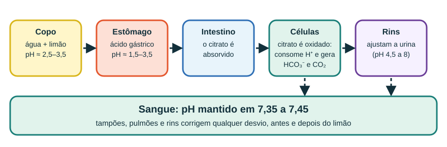

Início › Limão
Água com limão: ácida no copo, “alcalina” no mito
O limão é um dos alimentos mais ácidos que você come. Então como virou símbolo de “alcalinizar o corpo”? Há um grão de verdade na história — e uma grande distorção.
Por que o limão é azedo
O suco de limão tem pH em torno de 2 a 2,6 porque contém cerca de 5 a 6% de ácido cítrico (C6H8O7). Essa molécula tem três grupos carboxila (–COOH), cada um capaz de ceder um H+ à água.

Espremer um pouco de limão em um copo de água faz o pH ficar, em geral, entre 2,5 e 3,5, dependendo da quantidade. Quer testar? Use o simulador do Laboratório.
De onde vem a ideia de que limão “alcaliniza”
O grão de verdade é este: o citrato, que sobra do ácido cítrico depois que ele cede o H+, é absorvido pelo intestino e oxidado pelas células. Nesse processo, ele consome H+ e gera bicarbonato (HCO3−) e CO2.
Por isso, frutas cítricas têm um índice PRAL (carga ácida potencial renal) negativo: elas tendem a deixar a urina menos ácida. É esse efeito que alimenta o marketing.

Na medicina, o citrato de potássio (com prescrição) é usado para tornar a urina menos ácida e reduzir a formação de certos cálculos renais. Isso é tratamento dirigido — não é o mesmo que beber água com limão.
Urina menos ácida não significa sangue mais alcalino. A mudança na urina é justamente o sinal de que os rins estão fazendo seu trabalho para manter o sangue em 7,35–7,45.
Limão + bicarbonato: a “água alcalina com limão”
Algumas receitas misturam limão com bicarbonato de sódio. O que acontece é uma reação ácido-base, e você vê a espuma:
Cada H+ do ácido cítrico reage com um HCO3−, formando H2O e CO2 (as bolhas). O resultado é uma solução de citrato de sódio — a acidez do limão foi consumida, mas você também ingeriu sódio. Veja o bicarbonato em detalhe em Ligações químicas.
Benefícios e cuidados reais
- Vitamina C: o suco tem dezenas de miligramas por 100 mL (algo em torno de 40 mg). Em um copo, a quantidade é pequena, mas ajuda.
- Hidratação: se o sabor faz você beber mais água, isso é um benefício verdadeiro.
- Dentes: abaixo de pH ≈ 5,5, o esmalte pode ser desmineralizado quando o contato é frequente ou prolongado. Prefira canudo, não fique “bicando” o dia todo e enxágue a boca com água depois. Costuma-se recomendar esperar um tempo (30 a 60 minutos) antes de escovar os dentes.
- Estômago: quem tem gastrite ou refluxo pode sentir piora com bebidas ácidas.
- Não é “detox”: não há evidência de que água com limão elimine toxinas ou emagreça.
Um copo com cerca de 10 mL de suco traz aproximadamente 3 milimols de ácido cítrico. O corpo lida com cerca de 15.000 milimols de CO2 por dia. Compare esses números na página do pH do sangue.